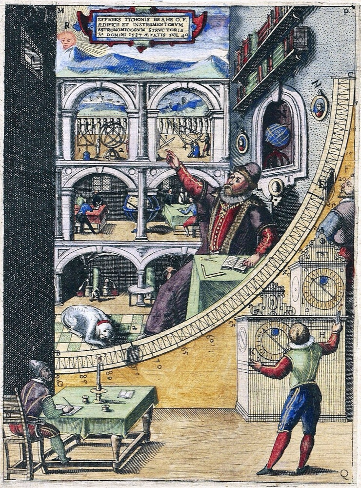
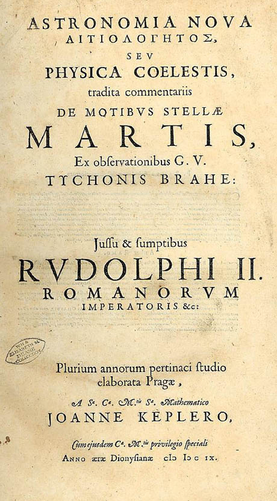

- Tycho measured planets by eye, with no telescope, to about one arcminute
- Johannes Kepler joined him in Prague in 1600 and worked on the orbit of Mars
- His best circular model missed Tycho’s data by eight arcminutes. He trusted the data and gave up circles
- Two laws in 1609, the third in 1619
A small disagreement with good data overturned 2000 years of circles.